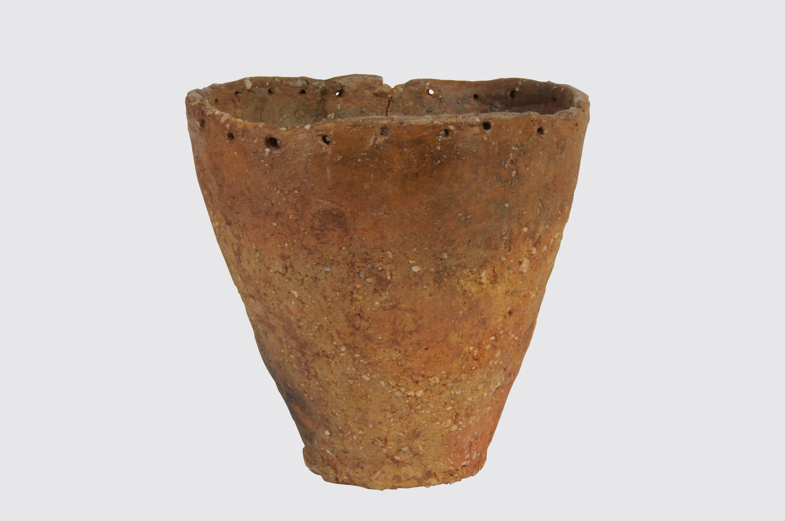

‘민무늬’인데
무늬가 있네?
민무늬토기는 빗살무늬토기보다
무늬가 적어서 붙은 이름이에요.
토기의 입구와 몸통을 비교해 보세요.
서연 · “작은 구멍들이 어디를 따라 이어지는지 찾아볼까?”
출처 · 검단선사박물관 ‘민무늬토기’
사진: 공공누리 제2유형 · 출처표시 / 상업적 이용금지
GEOMDAN · A LITTLE POTTERY STUDIO
검단에서 발견된 토기를 자세히 보고,
내 손으로 돌려 구멍무늬를 만들어 봐요.
시간 제한 없이, 손가락으로 가볍게 즐겨요.

FIELD NOTE 01 · 실제 유물에서 발견해요
사진 속 토기를 살펴보고, 구멍무늬가 있는 부분을 눌러요.
민무늬토기는 빗살무늬토기보다
무늬가 적어서 붙은 이름이에요.
토기의 입구와 몸통을 비교해 보세요.
출처 · 검단선사박물관 ‘민무늬토기’
사진: 공공누리 제2유형 · 출처표시 / 상업적 이용금지


FIELD NOTE 02 · 손으로 만드는 토기
같은 간격으로 구멍무늬를 새겨, 토기에 빛을 돌려주세요.
둥근 둘레를 펼쳐 보면 길이가 한눈에 보여요.